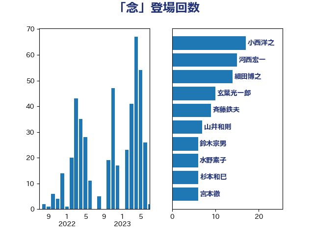

単語「念」

| 小西洋之 | 立憲民主党 | 17 回 |
| 河西宏一 | 公明党 | 15 回 |
| 細田博之 | 自由民主党 | 14 回 |
| 玄葉光一郎 | 立憲民主党 | 10 回 |
| 斉藤鉄夫 | 公明党 | 9 回 |
| 山井和則 | 立憲民主党 | 7 回 |
| 鈴木宗男 | 日本維新の会 | 6 回 |
| 水野素子 | 立憲民主党 | 6 回 |
| 杉本和巳 | 日本維新の会 | 6 回 |
| 宮本徹 | 日本共産党 | 6 回 |
| 森英介 | 自由民主党 | 5 回 |
| 梅村みずほ | 日本維新の会 | 5 回 |
| 平口洋 | 自由民主党 | 5 回 |
| 吉田統彦 | 立憲民主党 | 5 回 |
| 加田裕之 | 自由民主党 | 5 回 |
| 米山隆一 | 立憲民主党 | 4 回 |
| 竹内譲 | 公明党 | 4 回 |
| 神谷裕 | 立憲民主党 | 4 回 |
| 松野博一 | 自由民主党 | 4 回 |
| 末松信介 | 自由民主党 | 4 回 |
| 木原稔 | 自由民主党 | 4 回 |
| 岩谷良平 | 日本維新の会 | 4 回 |
| 山田勝彦 | 立憲民主党 | 4 回 |
| 山東昭子 | 自由民主党 | 4 回 |
| 宮本岳志 | 日本共産党 | 4 回 |
| 塩村あやか | 立憲民主党 | 4 回 |
| 加藤勝信 | 自由民主党 | 4 回 |
| 中根一幸 | 自由民主党 | 4 回 |
| 上田清司 | 国民民主党 | 4 回 |
| 鬼木誠 | 立憲民主党 | 3 回 |
| 音喜多駿 | 日本維新の会 | 3 回 |
| 野田聖子 | 自由民主党 | 3 回 |
| 野村哲郎 | 自由民主党 | 3 回 |
| 笠井亮 | 日本共産党 | 3 回 |
| 秋葉賢也 | 自由民主党 | 3 回 |
| 片山さつき | 自由民主党 | 3 回 |
| 渡辺周 | 立憲民主党 | 3 回 |
| 浅野哲 | 国民民主党 | 3 回 |
| 梅谷守 | 立憲民主党 | 3 回 |
| 松野明美 | 日本維新の会 | 3 回 |
| 斎藤アレックス | 国民民主党 | 3 回 |
| 打越さく良 | 立憲民主党 | 3 回 |
| 徳永久志 | 無所属 | 3 回 |
| 川田龍平 | 立憲民主党 | 3 回 |
| 山田賢司 | 自由民主党 | 3 回 |
| 山添拓 | 日本共産党 | 3 回 |
| 尾辻秀久 | 無所属 | 3 回 |
| 天畠大輔 | れいわ新選組 | 3 回 |
| 大島九州男 | れいわ新選組 | 3 回 |
| 國重徹 | 公明党 | 3 回 |
| 吉田はるみ | 立憲民主党 | 3 回 |
| 伊藤岳 | 日本共産党 | 3 回 |
| 中島克仁 | 立憲民主党 | 3 回 |
| 齋藤健 | 自由民主党 | 2 回 |
| 階猛 | 立憲民主党 | 2 回 |
| 阿部知子 | 立憲民主党 | 2 回 |
| 重徳和彦 | 立憲民主党 | 2 回 |
| 足立康史 | 日本維新の会 | 2 回 |
| 赤羽一嘉 | 公明党 | 2 回 |
| 赤嶺政賢 | 日本共産党 | 2 回 |
| 菅直人 | 立憲民主党 | 2 回 |
| 笹川博義 | 自由民主党 | 2 回 |
| 石川香織 | 立憲民主党 | 2 回 |
| 田村まみ | 国民民主党 | 2 回 |
| 田嶋要 | 立憲民主党 | 2 回 |
| 櫻井周 | 立憲民主党 | 2 回 |
| 森田俊和 | 立憲民主党 | 2 回 |
| 柴田巧 | 日本維新の会 | 2 回 |
| 枝野幸男 | 立憲民主党 | 2 回 |
| 松木けんこう | 立憲民主党 | 2 回 |
| 松原仁 | 立憲民主党 | 2 回 |
| 杉尾秀哉 | 立憲民主党 | 2 回 |
| 末松義規 | 立憲民主党 | 2 回 |
| 山口俊一 | 自由民主党 | 2 回 |
| 小渕優子 | 自由民主党 | 2 回 |
| 小沼巧 | 立憲民主党 | 2 回 |
| 守島正 | 日本維新の会 | 2 回 |
| 奥野総一郎 | 立憲民主党 | 2 回 |
| 大塚拓 | 自由民主党 | 2 回 |
| 塚田一郎 | 自由民主党 | 2 回 |
| 吉田宣弘 | 公明党 | 2 回 |
| 古川禎久 | 自由民主党 | 2 回 |
| 古屋範子 | 公明党 | 2 回 |
| 佐藤正久 | 自由民主党 | 2 回 |
| 仁比聡平 | 日本共産党 | 2 回 |
| 上月良祐 | 自由民主党 | 2 回 |
| 高橋英明 | 日本維新の会 | 1 回 |
| 高橋光男 | 公明党 | 1 回 |
| 高木啓 | 自由民主党 | 1 回 |
| 馬場雄基 | 立憲民主党 | 1 回 |
| 青柳陽一郎 | 立憲民主党 | 1 回 |
| 青柳仁士 | 日本維新の会 | 1 回 |
| 青山繁晴 | 自由民主党 | 1 回 |
| 関芳弘 | 自由民主党 | 1 回 |
| 長島昭久 | 自由民主党 | 1 回 |
| 長妻昭 | 立憲民主党 | 1 回 |
| 鎌田さゆり | 立憲民主党 | 1 回 |
| 鈴木敦 | 国民民主党 | 1 回 |
| 鈴木憲和 | 自由民主党 | 1 回 |
| 野田佳彦 | 立憲民主党 | 1 回 |
| 遠藤良太 | 日本維新の会 | 1 回 |
| 赤澤亮正 | 自由民主党 | 1 回 |
| 赤松健 | 自由民主党 | 1 回 |
| 谷川とむ | 自由民主党 | 1 回 |
| 角田秀穂 | 公明党 | 1 回 |
| 西銘恒三郎 | 自由民主党 | 1 回 |
| 西田昌司 | 自由民主党 | 1 回 |
| 西村智奈美 | 立憲民主党 | 1 回 |
| 西村康稔 | 自由民主党 | 1 回 |
| 藤巻健太 | 日本維新の会 | 1 回 |
| 藤岡隆雄 | 立憲民主党 | 1 回 |
| 葉梨康弘 | 自由民主党 | 1 回 |
| 落合貴之 | 立憲民主党 | 1 回 |
| 萩生田光一 | 自由民主党 | 1 回 |
| 芳賀道也 | 国民民主党 | 1 回 |
| 舟山康江 | 国民民主党 | 1 回 |
| 舞立昇治 | 自由民主党 | 1 回 |
| 羽田次郎 | 立憲民主党 | 1 回 |
| 緒方林太郎 | 無所属 | 1 回 |
| 窪田哲也 | 公明党 | 1 回 |
| 稲田朋美 | 自由民主党 | 1 回 |
| 福島みずほ | 社会民主党 | 1 回 |
| 福山哲郎 | 立憲民主党 | 1 回 |
| 神田憲次 | 自由民主党 | 1 回 |
| 神津たけし | 立憲民主党 | 1 回 |
| 石田昌宏 | 自由民主党 | 1 回 |
| 石橋林太郎 | 自由民主党 | 1 回 |
| 石川昭政 | 自由民主党 | 1 回 |
| 石川大我 | 立憲民主党 | 1 回 |
| 石垣のりこ | 立憲民主党 | 1 回 |
| 石井苗子 | 日本維新の会 | 1 回 |
| 田村智子 | 日本共産党 | 1 回 |
| 田名部匡代 | 立憲民主党 | 1 回 |
| 牧義夫 | 立憲民主党 | 1 回 |
| 渡辺創 | 立憲民主党 | 1 回 |
| 浜田聡 | NHK党 | 1 回 |
| 浅田均 | 日本維新の会 | 1 回 |
| 浅尾慶一郎 | 自由民主党 | 1 回 |
| 沢田良 | 日本維新の会 | 1 回 |
| 江田憲司 | 立憲民主党 | 1 回 |
| 橋本岳 | 自由民主党 | 1 回 |
| 榛葉賀津也 | 国民民主党 | 1 回 |
| 松本剛明 | 自由民主党 | 1 回 |
| 松島みどり | 自由民主党 | 1 回 |
| 東徹 | 日本維新の会 | 1 回 |
| 杉田水脈 | 自由民主党 | 1 回 |
| 本田顕子 | 自由民主党 | 1 回 |
| 本田太郎 | 自由民主党 | 1 回 |
| 有村治子 | 自由民主党 | 1 回 |
| 斎藤洋明 | 自由民主党 | 1 回 |
| 後藤茂之 | 自由民主党 | 1 回 |
| 後藤祐一 | 立憲民主党 | 1 回 |
| 川合孝典 | 国民民主党 | 1 回 |
| 岸真紀子 | 立憲民主党 | 1 回 |
| 岩田和親 | 自由民主党 | 1 回 |
| 岩屋毅 | 自由民主党 | 1 回 |
| 岡田克也 | 立憲民主党 | 1 回 |
| 山際大志郎 | 自由民主党 | 1 回 |
| 山下貴司 | 自由民主党 | 1 回 |
| 小林一大 | 自由民主党 | 1 回 |
| 小川淳也 | 立憲民主党 | 1 回 |
| 寺田稔 | 自由民主党 | 1 回 |
| 宮崎雅夫 | 自由民主党 | 1 回 |
| 宮崎政久 | 自由民主党 | 1 回 |
| 安江伸夫 | 公明党 | 1 回 |
| 大野敬太郎 | 自由民主党 | 1 回 |
| 大西英男 | 自由民主党 | 1 回 |
| 大椿ゆうこ | 立憲民主党 | 1 回 |
| 大塚耕平 | 国民民主党 | 1 回 |
| 大口善徳 | 公明党 | 1 回 |
| 塩川鉄也 | 日本共産党 | 1 回 |
| 堤かなめ | 立憲民主党 | 1 回 |
| 堀場幸子 | 日本維新の会 | 1 回 |
| 城井崇 | 立憲民主党 | 1 回 |
| 土田慎 | 自由民主党 | 1 回 |
| 吉良州司 | 無所属 | 1 回 |
| 吉川沙織 | 立憲民主党 | 1 回 |
| 吉川元 | 立憲民主党 | 1 回 |
| 前川清成 | 日本維新の会 | 1 回 |
| 佐藤公治 | 立憲民主党 | 1 回 |
| 佐々木さやか | 公明党 | 1 回 |
| 伴野豊 | 立憲民主党 | 1 回 |
| 伊藤孝恵 | 国民民主党 | 1 回 |
| 伊藤俊輔 | 立憲民主党 | 1 回 |
| 伊佐進一 | 公明党 | 1 回 |
| 井上哲士 | 日本共産党 | 1 回 |
| 中野洋昌 | 公明党 | 1 回 |
| 中川正春 | 立憲民主党 | 1 回 |
| 世耕弘成 | 自由民主党 | 1 回 |
| 上野賢一郎 | 自由民主党 | 1 回 |
| 上川陽子 | 自由民主党 | 1 回 |
| 三木圭恵 | 日本維新の会 | 1 回 |